Junior at Florida International University studying Cybersecurity, CompTIA A+ / Network+ / Security+ certified, and Google Cybersecurity Professional Certificate holder. I design, build, and secure real infrastructure — not just lab exercises.
I'm a junior Cybersecurity major at Florida International University (expected graduation 2027), pursuing a career as a SOC analyst. To build real, hands-on experience beyond coursework, I designed and built a complete home network security lab from the ground up — a segmented network with a hardened firewall, self-hosted VPN, intrusion detection, PKI/certificate management, and a virtualized services host — treating every configuration decision the way I would in a production environment.
A fully self-built home network and server infrastructure, built incrementally over several months, covering firewall administration, VPN-based remote access, intrusion detection, PKI, virtualization, and self-hosted application deployment.
The infrastructure runs on a compact wall-mounted 10-inch rack, wired from individual components, including custom 3D-printed mounting brackets designed to fit the rack's non-standard dimensions.
Configured and administer a pfSense firewall as the network's perimeter defense, with rules following a least-privilege, default-deny model — every rule scoped to a specific source, destination, and port. Set up DHCP (Kea), DNS, NTP, and system logging, and configured WAN-facing settings deliberately, including bogon vs. private-network filtering trade-offs.
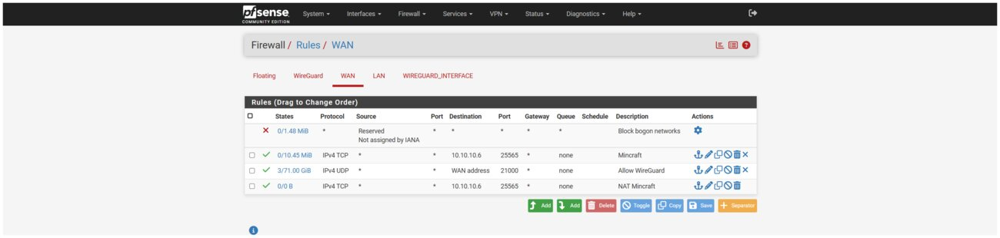
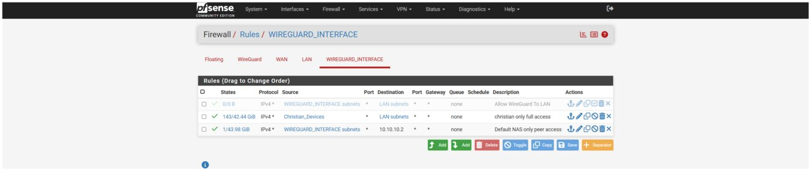
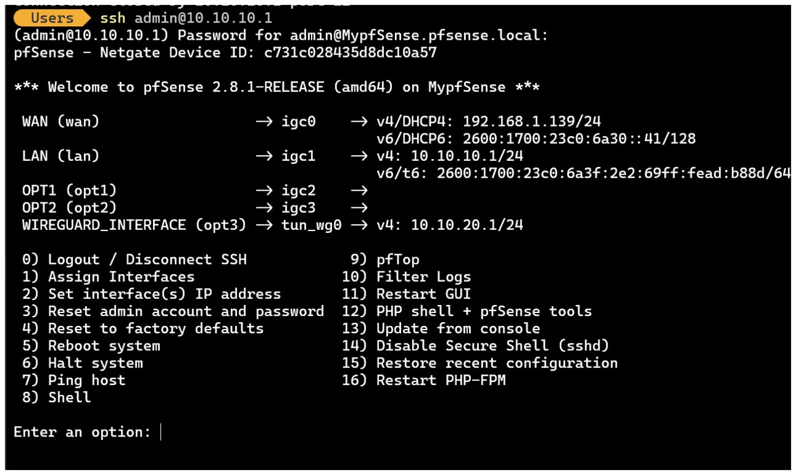
Replaced a third-party mesh VPN with a fully self-hosted WireGuard deployment, including port forwarding through a double-NAT ISP gateway. Designed a tiered access model using firewall aliases and diagnosed a real-world NAT hairpin/reflection issue tracing back to a WAN bogon-filtering setting.
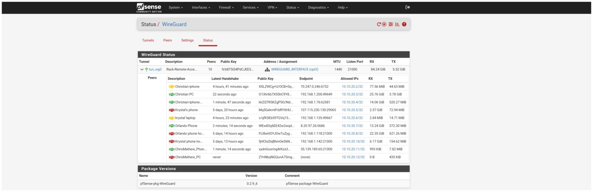
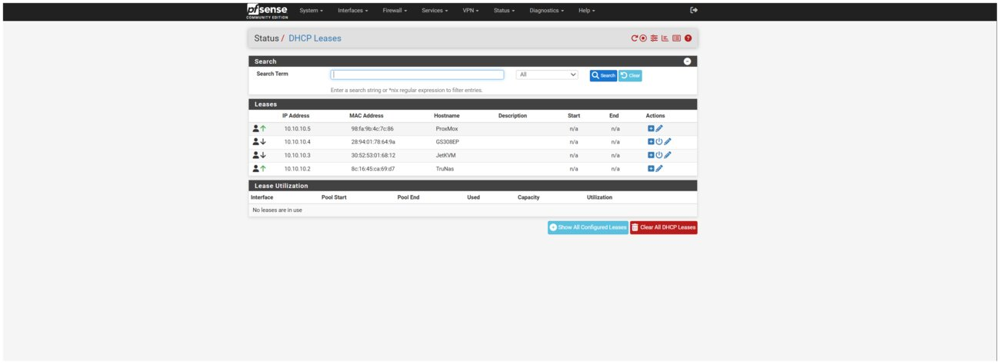
Deployed Snort as an active IDS/IPS on the WAN interface in inline blocking mode. Curated rule categories against the hardware's processing budget, corrected a self-lockout risk in the block-target configuration, and built a cron-scheduled script that pushes new Snort alerts to a Telegram bot in real time.
Administer a TrueNAS SCALE server with SMB/NFS shares under scoped access restrictions, UPS monitoring (NUT), and a self-signed internal CA issuing TLS certificates for internal services — including diagnosing a certificate rejection caused by exceeding the modern max validity period. Scheduled automated backups from the hypervisor over NFS.
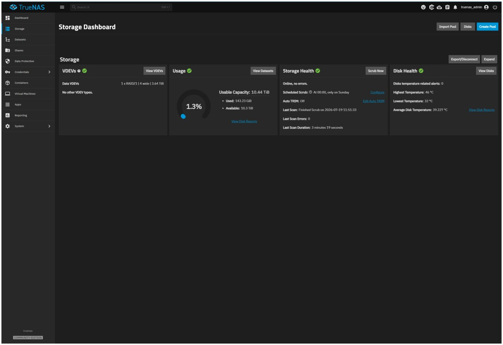
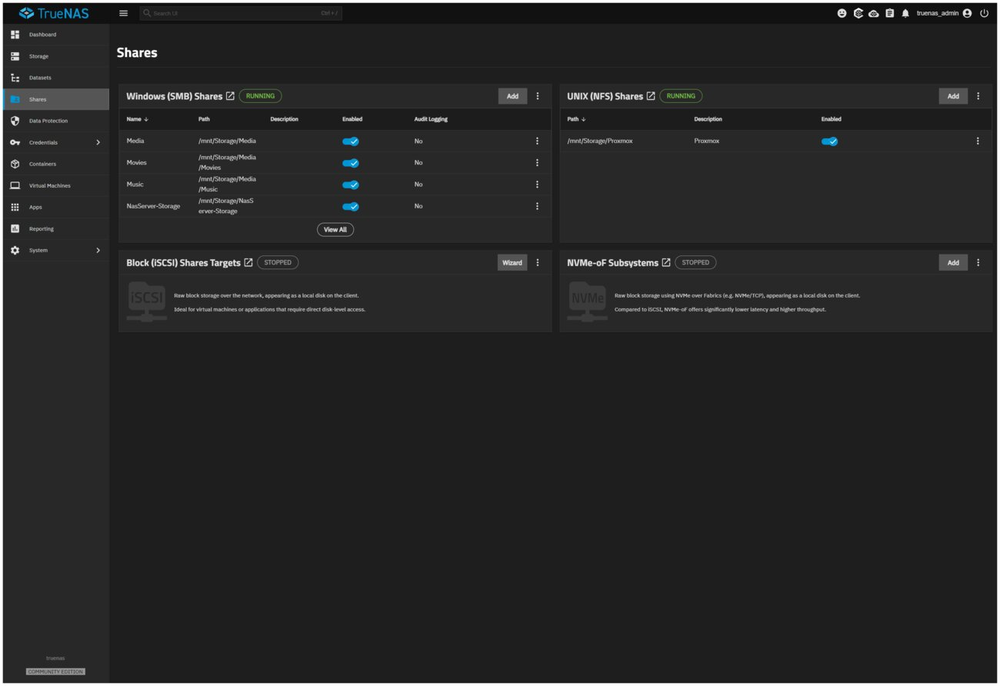
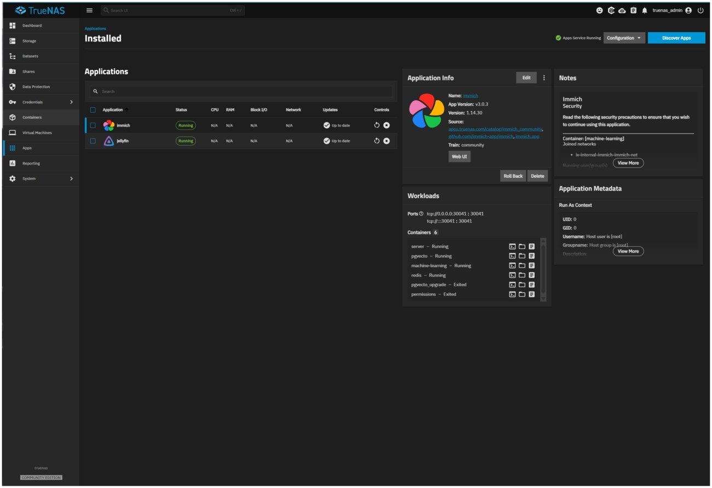
Built and manage a Proxmox VE host running Docker inside an LXC container (managed with Portainer), hosting Vaultwarden behind a Caddy TLS reverse proxy, Uptime Kuma for monitoring with Telegram alerting, and a resource-isolated application server locked down to a single inbound rule. Resolved Docker directory-permission, NAT, and container sizing issues along the way.
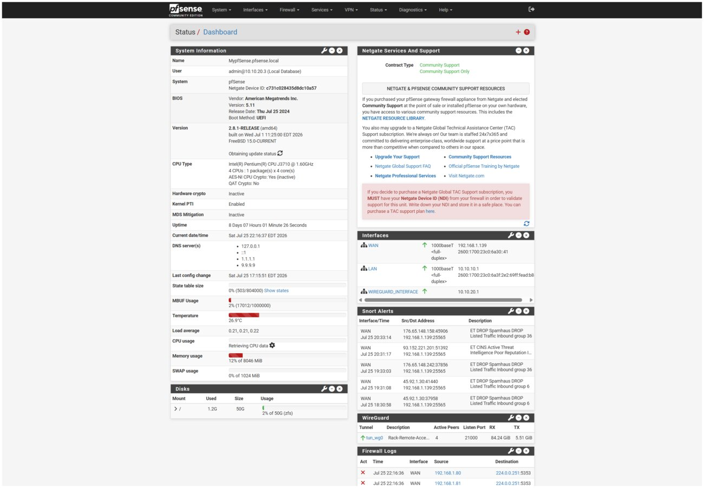
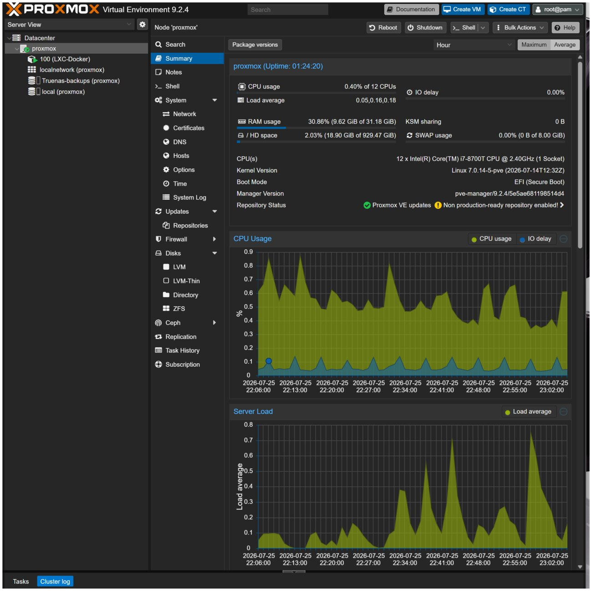
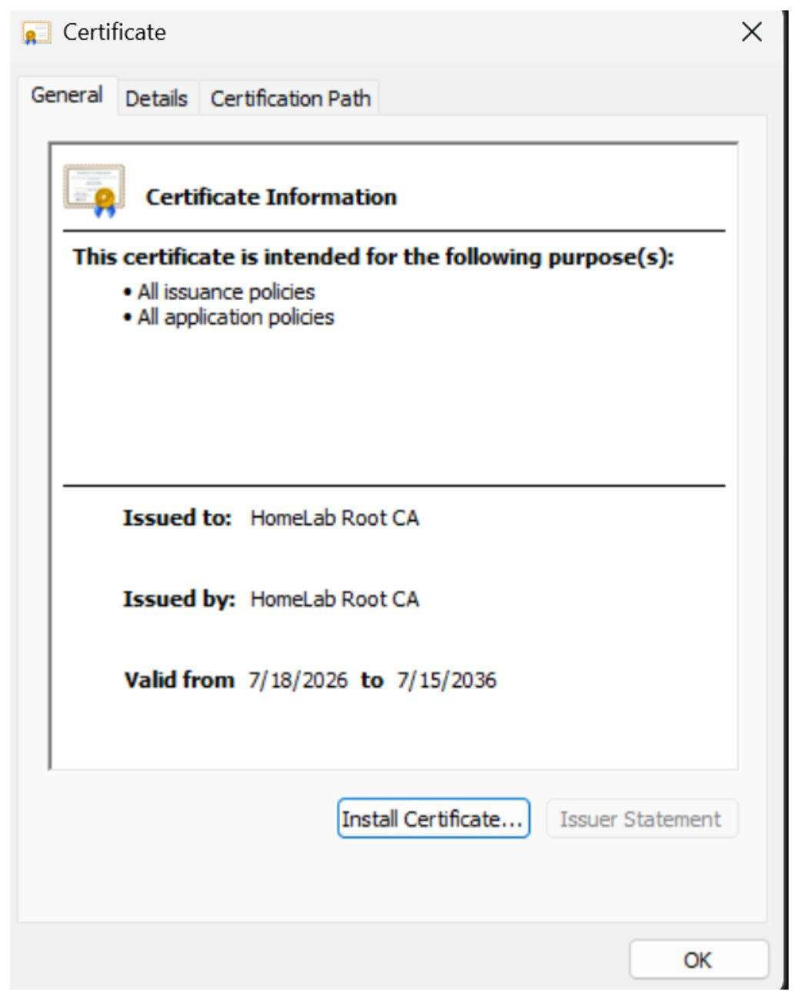
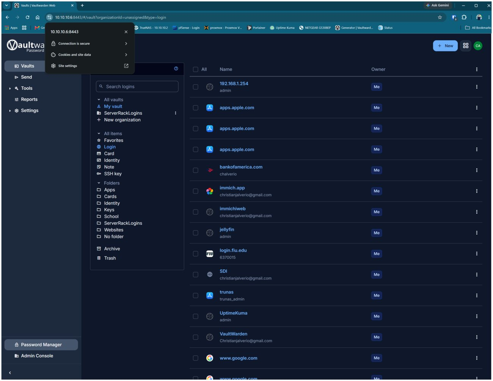
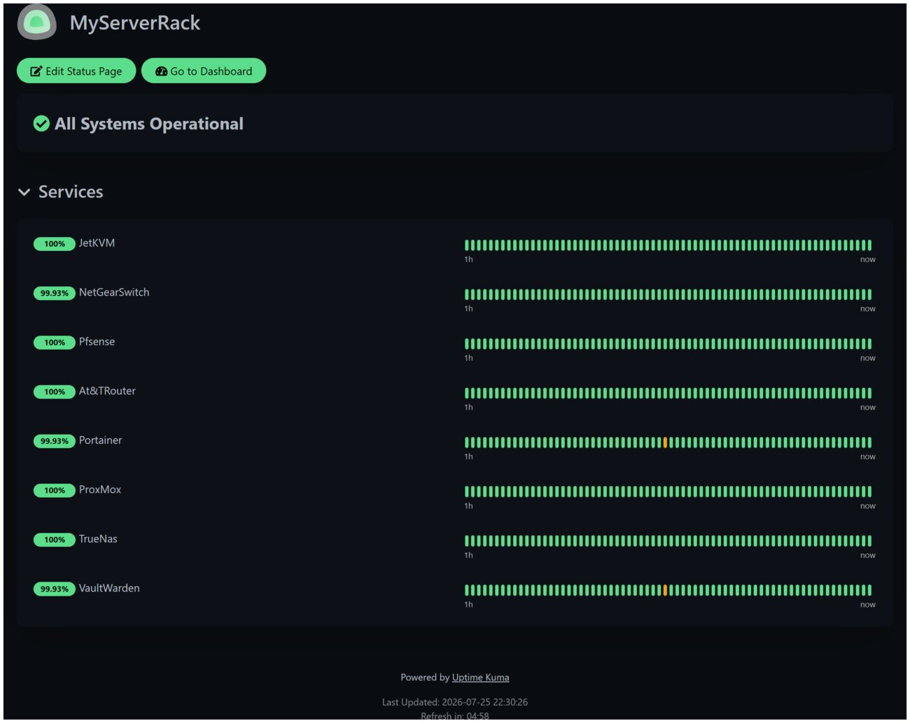
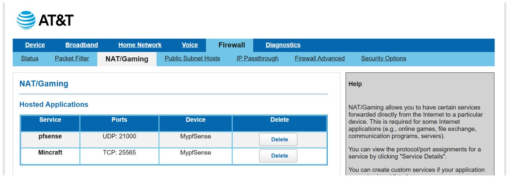
NET::ERR_CERT_VALIDITY_TOO_LONG) back to a self-signed certificate exceeding the modern 398-day maximum validity policy, not a trust-chain problem.Coral Springs, FL | christianjalverio@gmail.com | (954) 589-3159